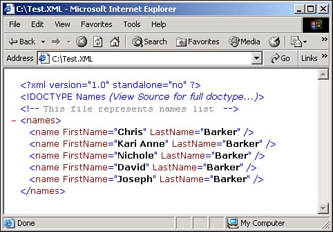

Sometimes I need to take data that is in my database and write it out to an XML document. I heard that XMLWriter is a good way to do this. What does XMLWriter do, and how do I create an XML document with it?
The XMLWriter provides a quick way to generate streams or files that contain XML data. The stream is not cached; it is forward-only. The XML data that the XMLWriter generates conforms to W3C XML 1.0 and the namespaces in XML recommendations.
With XMLWriter, you can accomplish the following:
Create well-formed XML.
Manage the output-including methods to determine the progress of the output-with the WriteState property.
Flush or close the output.
Write multiple documents to one output stream.
Encode binary bytes as base64 and as binhex, and write out the resulting text.
Report the current namespace prefix, xml:lang, or xml:space scope.
Write valid names, qualified names, and name tokens.
XMLWriter has one implementation: the XMLTextWriter.
To show you how to use the XMLTextWriter, the sample code will create a data table, allowing the user to add names to it. Then the XMLTextWriter will be used to write the data from the data table into an XML document.
Rather than using a DataAdapter object to create and populate the data table from live data, the code will create the data table from scratch, and the user will add data to it. To perform this task, add the properties and methods shown in Table 12.1. The first object that will be created and utilized is the DataColumn object.
|
Object |
Property/Method |
Description |
|---|---|---|
|
DataColumn |
ColumnName |
Specifies the Column name for the current data column that is being created. |
|
DataColumn |
Caption |
Stores the Caption used to be displayed. |
|
DataTable.Columns |
Add |
Adds the current DataColumn object to the collection of columns in the data table. |
|
DataTable |
NewRow |
Creates a DataRow object. |
|
DataRow |
Item(ColumnName) |
Replaces data in the specified column, in the current DataRow object. |
|
DataTable.Rows |
Add |
Adds the data row to the collection of rows in the data table. |
The last task that the example performs is creating the XML document by using the properties and methods of the XMLTextWriter class, shown in Table 12.2.
|
Property/Method |
Description |
|---|---|
|
WriteStartDocument |
Writes the XML declaration with the version 1.0. |
|
Formatting |
Specifies how you want the XML file formatted. In this case, System.Xml.Formatting.Indented is used. |
|
WriteDocType |
Writes the DOCTYPE declaration with the specified name and optional attributes. This allows you to specify the type of objects that this document represents. |
|
WriteComment |
Allows you to write comments into your XML document. |
|
WriteStartElement |
Used for both the rows and the columns, this lets you specify the starting element for a row that is represented from a table. |
|
WriteAttributeString |
Writes columns and properties for data that is represented in the XML document. |
|
WriteEndElement |
Ends the row or column. |
|
Flush |
Flushes the stream from memory. |
|
Close |
Closes the string. |
Open and run the Visual Basic .NET-Chapter 12 solution. From the main Web page, click on the hyperlink with the caption How-To 12.1: Use XMLWriter to Create an XML Document. When the page loads, you can enter a few names by entering the last and first names and then clicking the button labeled Add to DataTable. When you have added a few names, click the button labeled Create XML File. Using Explorer, open the file created in C:\ called test.xml (see Figure 12.1).
Create a Web Form. Then place the Labels, TextBoxes, Buttons, and DataGrid objects as seen in Figure 12.1 on the form with the properties set as in Table 12.3.
|
Object |
Property |
Setting |
|---|---|---|
|
Label |
Text |
Last Name |
|
TextBox |
ID |
txtLastName |
|
Label |
Text |
First Name |
|
TextBox |
ID |
txtFirstName |
|
Button |
ID |
btnAdd |
|
Text |
Add to DataTable |
|
|
Button |
ID |
btnCreateXMLFile |
|
Text |
Create XML File |
|
|
DataGrid |
ID |
dgDataToWrite |
|
HyperLink |
ID |
hplReturnToMain |
|
NavigateURL |
wfrmMain.aspx |
Add the following line to the code module of the form. Place it under the line that reads Web Form Designer Generated Code.
Dim mdtData As New DataTable()
Add the code in Listing 12.1 to the Load event of the page. If the data table has not been saved to the Session object, then you need to create it from scratch by first creating the data columns and then adding them to the data table. The DataTable object is then saved to the Session object with the name MyDataTable. If the Session object entry already exists, it is assigned back to the module variable mdtData. Last, the data table is bound to the DataGrid object by calling the BindTheGrid routine, which is described in the next step.
Private Sub Page_Load(ByVal sender As System.Object, _
ByVal e As System.EventArgs) Handles MyBase.Load
'Put user code to initialize the page here
If (Session("MyDataTable") Is Nothing) Then
Dim dcFirstName As New DataColumn()
dcFirstName.ColumnName = "FirstName"
dcFirstName.Caption = "First Name"
mdtData.Columns.Add(dcFirstName)
Dim dcLastName As New DataColumn()
dcLastName.ColumnName = "LastName"
dcLastName.Caption = "Last Name"
mdtData.Columns.Add(dcLastName)
Session("MyDataTable") = mdtData
Else
mdtData = CType(Session("MyDataTable"), DataTable)
End If
BindTheGrid()
End Sub
Create the routine BindTheGrid, shown in Listing 12.2, in the code module for the page.
Sub BindTheGrid()
dgDataToWrite.DataSource = mdtData
dgDataToWrite.DataBind()
End Sub
Add the code in Listing 12.3 to the Click event of the btnAdd button. This routine starts off by calling the NewRow method off the mdtData data table, thus creating a new DataRow object. The two columns in drNew are replaced with the values in txtLastName and txtFirstName. The new row is added to the data table, and the text boxes are cleared. Last, mdtData is rebound to the data grid by calling BindTheGrid.
Private Sub btnAdd_Click(ByVal sender As System.Object, _
ByVal e As System.EventArgs) Handles btnAdd.Click
Dim drNew As DataRow
drNew = mdtData.NewRow()
drNew.Item("LastName") = Me.txtLastName.Text
drNew.Item("FirstName") = Me.txtFirstName.Text
mdtData.Rows.Add(drNew)
Me.txtLastName.Text = ""
Me.txtFirstName.Text = ""
BindTheGrid()
End Sub
Add the code in Listing 12.4 to the Click event of the btnCreateXMLFile button. The first task is to declare an instance of the XMLTextWriter. Then the XMLTextWriter creates and opens the file c:\Text.xml. Next, the XML document is created using the Write methods, including the writing of the individual rows of the DataTable object. Last, the data is flushed, and the XMLTextWriter is closed.
Private Sub btnCreateXMLFile_Click(ByVal sender As System.Object, _
ByVal e As System.EventArgs) Handles btnCreateXMLFile.Click
Dim xtwMyData As System.Xml.XmlTextWriter = Nothing
Dim intCurrRow As Integer
Dim intNumRows As Integer
xtwMyData = New System.Xml.XmlTextWriter("c:\Test.XML", Nothing)
intNumRows = mdtData.Rows.Count - 1
With xtwMyData
.WriteStartDocument(False)
.Formatting = System.Xml.Formatting.Indented
.WriteDocType("Names", Nothing, Nothing, Nothing)
.WriteComment("This file represents names list")
.WriteStartElement("names")
For intCurrRow = 0 To intNumRows
'-- Start the current row
.WriteStartElement("name", Nothing)
'-- Write the fields
.WriteAttributeString("FirstName", _
mdtData.Rows(intCurrRow).Item("FirstName"))
.WriteAttributeString("LastName", _
mdtData.Rows(intCurrRow).Item("LastName"))
'-- Ending the row
.WriteEndElement()
Next
'-- Write the XML to file and close the writer
.Flush()
.Close()
End With
End Sub

This is one of three ways described in this chapter of how to write data out to an XML document. This is probably the second easiest method. The other two methods are using the XML DOM (described in How-To 12.3), which is the hardest method, and using the WriteXML method off the DataSet object (described in How-To 12.5), which is the easiest method of all three. The amount of control you have over the document matches the degree of difficulty in use.